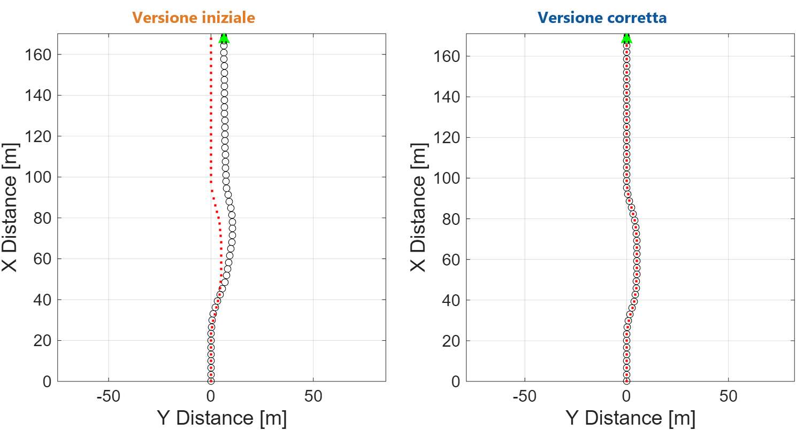
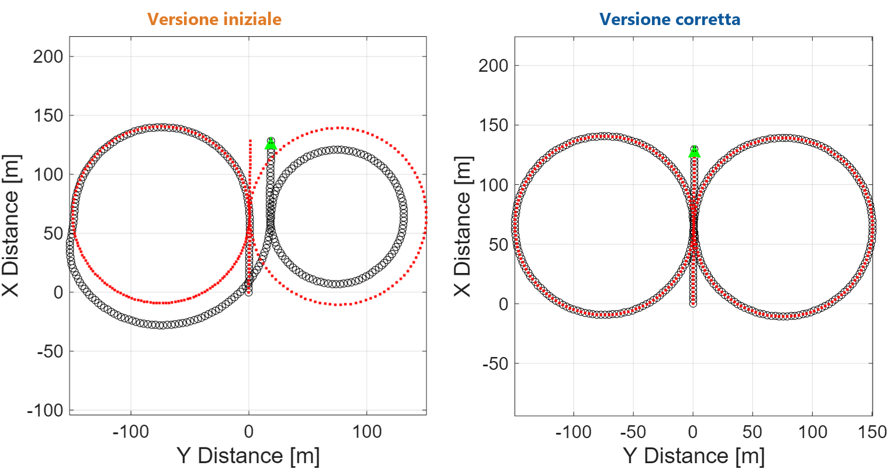

Il contesto
Nel corso di Autonomous Driving Systems i laboratori chiedevano di progettare, su modelli di veicolo forniti, i controllori di due funzioni ADAS: il controllo longitudinale con il cruise control adattivo e il controllo laterale con il path tracking. I modelli includono la dinamica delle ruote e pneumatici con formula di Pacejka, quindi i controllori vanno provati anche dove il comportamento del veicolo non è più lineare.
Cruise control adattivo
Il controllore di alto livello calcola un'accelerazione desiderata e lavora in due modalità. In controllo di velocità un PID insegue la velocità impostata dal guidatore. Quando si avvicina un veicolo, entra il controllo di distanza: un secondo PID mantiene una distanza obiettivo pari a una distanza minima di 4 m più la velocità per un tempo di distanziamento di 1,6 s.
Il passaggio tra le due modalità usa una logica con isteresi, per evitare che il controllore commuti di continuo quando la distanza è vicina alla soglia. Il livello basso converte l'accelerazione desiderata in coppia alle ruote tramite il modello inverso del veicolo: inerzia, resistenza aerodinamica, rotolamento e pendenza.

Path tracking con LQR
Per il controllo laterale ho usato un regolatore LQR basato sul modello monotraccia scritto negli errori rispetto alla traiettoria: errore laterale, errore di imbardata e le loro derivate. Il controllore trova a ogni passo il punto della traiettoria più vicino al veicolo, calcola gli errori e comanda lo sterzo delle ruote anteriori; un PI separato regola la velocità tramite la coppia ai motori.
Le prove sono su due percorsi: un evitamento ostacolo con spostamento laterale di 5 m e uno skidpad a otto. Il controllore gira a 50 Hz su un modello di veicolo completo a quattro ruote, come una centralina reale.
Revisione del controllore
La prima versione funzionava bene nell'evitamento ostacolo a 40 km/h, con un errore massimo di 3 cm, ma usciva di traiettoria a 60 km/h e accumulava errore sullo skidpad. Rivedendo il progetto ho individuato e corretto tre punti:
- Rigidezza di deriva degli pneumatici. Nel modello usato per calcolare i guadagni avevo inserito il fattore di forma della formula di Pacejka al posto della rigidezza di deriva vera, che si ottiene da B·C·D·Fz ed è oltre 100 volte più grande. Con i valori corretti, circa 119.000 e 167.000 N/rad per ruota, il progetto LQR rispecchia il veicolo reale.
- Feedforward di curvatura e progetto discreto. Ho aggiunto un termine di sterzo in anticipo calcolato dalla curvatura del riferimento e dal gradiente di sottosterzo, così l'LQR deve correggere solo gli errori residui. I guadagni sono ora calcolati in tempo discreto alla frequenza di 50 Hz del controllore, con più peso sull'errore di imbardata.
- Errore laterale geometrico. L'errore laterale era ottenuto integrando la sua derivata, quindi su un percorso lungo derivava lentamente: il controllore credeva di essere sulla traiettoria mentre se ne allontanava. Ora è calcolato come distanza con segno dal punto di riferimento più vicino.



A 40 km/h la versione iniziale era più precisa nell'evitamento ostacolo (3 cm contro 13 cm) grazie a guadagni più aggressivi, ma solo quella corretta resta sotto i 30 cm in tutte e quattro le prove, a 40 e 60 km/h su entrambi i percorsi.
Oltre i 60 km/h l'evitamento ostacolo richiede accelerazioni laterali vicine ai 9 m/s², cioè il limite di aderenza degli pneumatici: lì un LQR progettato su un modello lineare non basta più, e serve un controllore che tenga conto dei limiti, come un MPC.
Cosa ho imparato
Questi laboratori mi hanno fatto capire quanto un controllore dipenda dal modello su cui è progettato: un parametro sbagliato nel modello degli pneumatici o una stima dell'errore che deriva bastano a far fallire un regolatore che, nel caso più semplice, sembrava funzionare benissimo. Ho imparato a provare i controllori su scenari diversi e più severi di quello di progetto, e a cercare la causa di un comportamento strano nei dati della simulazione invece di ritoccare i guadagni a tentativi.